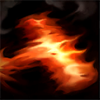

核心裝備
 蒐集者
蒐集者 狂風之力
狂風之力 多明尼克的問候
多明尼克的問候 嗜血者
嗜血者 無盡之刃
無盡之刃
以下為本站 7.2d 校正後的標準配置；實戰仍需依敵方陣容調整。


技能優先：Q > E > W
散彈槍普攻一次射出多顆子彈並需裝填；多顆命中同一目標時傷害更高。

發射火藥彈造成傷害，撞牆或延遲後返回爆炸，再次造成範圍物理傷害。
投出煙霧彈造成傷害與緩速，區域內敵人視野大幅受限。
向指定方向衝刺並裝填一發子彈，同時獲得防禦；普攻可縮短冷卻。
發射爆裂彈造成高額物理傷害並讓自己後退，彈體爆炸後對錐形範圍再造成傷害。
3技貼近 → 近距普攻 → 1技撞牆 → 普攻 → 4技收尾
利用牆面讓一技快速回爆，近距普攻吃到更多子彈；大絕同時斬殺並拉開距離。
2技煙霧 → 3技 → 普攻 → 1技 → 4技
先用煙霧彈限制視野與走位，再以三技調整槍口角度，適合河道與狹窄野區追擊。
1技消耗 → 3技換位 → 普攻 → 2技封路 → 4技後退
保持在前排後方輸出，一技與煙霧封住路線，最後用大絕後座力離開敵方突進範圍。
利用散彈擊退野怪與猛龍過江疊加物防，保持高血量完成快速清野。葛雷夫沒有穩定硬控，Gank 應優先配合有控制的線路，或入侵較弱的發育型打野。
在狹窄地形靠牆施放人在江湖，可讓回彈爆炸更快命中。物件團不要第一個進場，先用煙霧彈限制敵方主力視野，再靠短位移與普攻拉扯。
把自己當短射程輸出核心，站在前排之後持續找角度。大絕可用來斬殺或後座力調整位置，避免為了貼臉多顆子彈而跨越安全線。
對局名單是本站依英雄機制與目前配置整理的參考，不等同固定勝率。
打野先維持標準刷野與節奏裝，只有敵方陣容或我方前排需求明顯時才調整。
觸發：敵方前排多，物件團與正面團戰會長時間卡在高生命目標上。
標準配置已經具備足夠打坦能力，維持核心即可。
觸發：敵方能在你進場或搶物件前快速把你秒掉。
守護天使提供物防與復活，適合把最後一個純輸出位換成容錯。
魔提斯深淵提供魔防與低血量魔法護盾，比單純增加輸出更能保住進場或持續輸出。
觸發：進場或搶物件時經常被控制鏈直接中斷節奏。
先購買水銀飾帶取得主動解控，之後再合成水星彎刀；水銀飾帶是合成組件，不是另一件要與水星彎刀互換的成裝。
犧牲部分輸出型傳奇符文，換取韌性與緩速抗性。
觸發：敵方前排、鬥士或吸血核心能在物件團長時間回復。
致死宣告兼顧暴擊、穿透與重創，適合射手在不拆核心輸出邏輯下補反治療。
觸發：我方陣容沒有可靠第一承傷點，團戰需要有人更早進場吸收注意力。
這隻英雄不適合為了「缺前排」硬改成主坦；維持自己的輸出／功能，讓巴龍路或輔助補前排更合理。
提醒：「缺前排」不代表所有打野都要改坦裝；刺客、法師與射手打野硬轉坦通常會失去英雄價值。
7.2a 打野正式版：技能名稱依 Riot Games 台灣《激鬥峽谷》葛雷夫英雄頁校正；出裝、符文、技能順序與打野路線交叉參考 WildRiftFire 7.2a，並納入近期版本對清野與技能的調整。Tier 與對局為本站綜合評級。｜v52：完成打野第一批正式版，完整套用李星固定母版，補齊起手裝、核心三件、五件成裝、技能加點、三組連招、對局與前中後期節奏。
本站於 2026-08-27 依 Patch 7.2d 重新檢查此配置。 Tier、出裝、符文與對局屬於 Wild Rift Guide 的整理與分析，不是 Riot Games 官方推薦；版本改動後會再依官方公告與實戰資料校正。